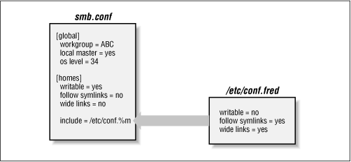

Using Samba
Robert Eckstein, David Collier-Brown, Peter Kelly1st Edition November 1999
1-56592-449-5, Order Number: 4495
416 pages, $34.95
|
|
|
|
|
Using SambaRobert Eckstein, David Collier-Brown, Peter Kelly1st Edition November 1999 1-56592-449-5, Order Number: 4495 416 pages, $34.95 |
4.3 Configuration File Options
Samba has well over 200 configuration options at its disposal. So let's start off easy by introducing some of the options you can use to modify the configuration file itself.
As we hinted earlier in the chapter, configuration files are by no means static. You can instruct Samba to include or even replace configuration options as it is processing them. The options to do this are summarized in Table 4.2.
Table 4.2: Configuration File Options Option
Parameters
Function
Default
Scope
config filestring (fully-qualified name)
Sets the location of a configuration file to use instead of the current one.
None
Global
includestring (fully-qualified name)
Specifies an additional segment of configuration options to be included at this point in the configuration file.
None
Global
copystring (name of share)
Allows you to clone the configuration options of another share in the current share.
None
Share
4.3.1 config file
The global
configfileoption specifies a replacement configuration file that will be loaded when the option is encountered. If the target file exists, the remainder of the current configuration file, as well as the options encounter so far, will be discarded; Samba will configure itself entirely with the options in the new file. Theconfigfileoption takes advantage of the variables above, which is useful in the event that you want load a special configuration file based on the machine name or user of the client that it connecting.For example, the following line instructs Samba to use a configuration file specified by the NetBIOS name of the client connecting, if such a file exists. If it does, options specified in the original configuration file are ignored. The following example attempts to lead a new configuration file based on the client's NetBIOS name:
[global] config file = /usr/local/samba/lib/smb.conf.%mIf the configuration file specified does not exist, the option is ignored and Samba will continue to configure itself based on the current file.
4.3.2 include
This option, discussed in greater detail earlier, copies the target file into the current configuration file at the point specified, as shown in Figure 4.1. This option also takes advantage of the variables specified earlier in the chapter, which is useful in the event that you want load configuration options based on the machine name or user of the client that it connecting. You can use this option as follows:
[global] include = /usr/local/samba/lib/smb.conf.%mIf the configuration file specified does not exist, the option is ignored. Remember that any option specified previously is overridden. In Figure 4.1, all three options will override their previous values.
Figure 4.1: The include option in a Samba configuration file
The
includeoption cannot understand the variables%u(user),%p(current share's rout directory), or%s(current share) because they are not set at the time the file is read.4.3.3 copy
The
copyconfiguration option allows you to clone the configuration options of the share name that you specify in the current share. The target share must appear earlier in the configuration file than the share that is performing the copy. For example:[template] writable = yes browsable = yes valid users = andy, dave, peter [data] path = /usr/local/samba copy = templateNote that any options in the share that invoked the
copydirective will override those in the cloned share; it does not matter whether they appear before or after thecopydirective.
 |
 |
 |
| 4.2 Special Sections |
 | 4.4 Server Configuration |
Back to: Using Samba
© 1999, O'Reilly & Associates, Inc.